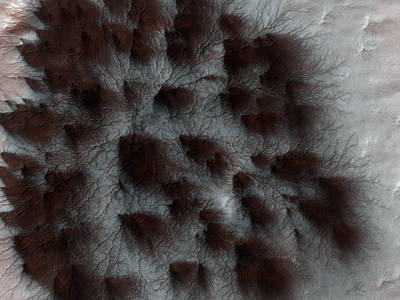

Starburst Spider
Mars' seasonal cap of carbon dioxide ice has eroded many beautiful terrains as it sublimates (goes directly from ice to vapor) every spring. In the region where the High Resolution Imaging Science Experiment (HiRISE) camera on NASA's Mars Reconnaissance Orbiter took this image on Feb. 4, 2009, we see troughs that form a starburst pattern.On the Shape of Impact Craters
This image acquired by the HiRISE camera on NASA's Mars Reconnaissance Orbiter shows a roughly 3-kilometer impact crater, formed on the sloping walls of Tithonium Chasma, part of the large Valles Marineris canyon system. The shape of a crater can depend on factors including the angle of impact and the pre-impact slope and topography.
Frosted Dunes on Mars
Sand dunes cover much of this terrain, which has large boulders lying on flat areas between the dunes. It is late winter in the southern hemisphere of Mars, and these dunes are just getting enough sunlight to start defrosting their seasonal cover of carbon dioxide. Spots form where pressurized carbon dioxide gas escapes to the surface.Astronauts on the International Space Station captured a series of incredible star trail images on Oct. 3, 2016, as they orbited at 17,500 miles per hour. The station orbits the Earth every 90 minutes, and astronauts aboard see an average of 16 sunrises and sunsets every 24 hours.The Bigelow Expandable Activity Module (BEAM) is seen attached to the Tranquility module of the International Space Station. BEAM is an is an experimental expandable habitat. Expandable habitats, occasionally described as inflatable habitats, greatly decrease the amount of transport volume for future space missions. These “expandables” weigh less and take up less room on a rocket while allowing additional space for living and working. They also provide protection from solar and cosmic radiation, space debris, and other contaminants. Crews traveling to the moon, Mars, asteroids, or other destinations could use them as habitable structures.The Soyuz MS-02 rocket is launched with Expedition 49 Soyuz commander Sergey Ryzhikov of Roscosmos, flight engineer Shane Kimbrough of NASA, and flight engineer Andrey Borisenko of Roscosmos, Wednesday, Oct. 19, 2016, at the Baikonur Cosmodrome in Kazakhstan, at 4:05 a.m. EDT Wednesday (2:05 p.m. Baikonur time).Alluvial Fans in Saheki Crater, Mars
Alluvial fans are gently-sloping wedges of sediments deposited by flowing water. Some of the best-preserved alluvial fans on Mars are in Saheki Crater, an area that has been imaged many times previously.Many Fantastic Colors
The Nili Fossae region, located on the northwest rim of Isidis impact basin, is one of the most colorful regions of Mars. This region is ancient and has had a complicated geologic history, leading to interesting structures like layered bedrock, as well as other compositions.A Streamlined Form in Lethe Vallis, Mars
This image shows a portion of Lethe Vallis, an outflow channel that also transported lava. This is one of only a few places on Mars where these pristine-appearing landforms have been identified. The channel formed by catastrophic floods, during which it produced the prominent crater-cored, teardrop-shaped island in the middle.The International Space Station has tracked Hurricane Matthew all week, providing images and video from low Earth orbit as the storm hit the Caribbean Sea and made its way towards Florida. In this photograph taken by Expedition 49 Flight Engineer Kate Rubins on Oct. 4, 2016, at 21:05 GMT, the hurricane's clouds extend across the frame and the space station's solar arrays are visible at the upper-right corner of the image. As the hurricane strengthens and approaches the Florida coast, NASA and NOAA satellites continue to provide forecasters and scientists valuable data on the development and changes in the storm.Map of Mars Gravity
A new map of Mars' gravity is the most detailed to date, providing a revealing glimpse into the planet's hidden interior. The map was derived using Doppler and range tracking data collected by NASA's Deep Space Network from three NASA spacecraft in orbit around Mars: Mars Global Surveyor, Mars Odyssey, and the Mars Reconnaissance Orbiter.Chasma Boreale and North Polar Ice Cap of Mars
Mars has bright polar caps of ice that are easily visible from telescopes on Earth. A seasonal cover of carbon-dioxide ice and snow is observed to advance and retreat over the poles during the Martian year. Scientists using radar data have found a record of the most recent Martian ice age recorded in the north polar ice cap.This view from the Mast Camera (Mastcam) in NASA's Curiosity Mars rover shows the "Marias Pass" area where a lower and older geological unit of mudstone -- the pale zone in the center of the image -- lies in contact with an overlying geological unit of sandstone.
This view from the Mast Camera (Mastcam) on NASA's Curiosity Mars rover covers an area in "Bridger Basin" that includes the locations where the rover drilled a target called "Big Sky" on the mission's Sol 1119 (Sept. 29, 2015) and a target called "Greenhorn" on Sol 1137 (Oct. 18, 2015).
Slip Face on Downwind Side of 'Namib' Sand Dune on Mars
This view from NASA's Curiosity Mars Rover shows the downwind side of a dune about 13 feet high within the Bagnold Dunes field on Mars.Downwind Side of 'Namib' Sand Dune on Mars, Stereo
This stereo view from NASA's Curiosity Mars Rover shows the downwind side of a dune about 13 feet high within the Bagnold Dunes on Mars.
Mastcam Telephoto of a Martian Dune's Downwind Face
This Dec. 17, 2015, view combines multiple images from the telephoto-lens camera of the Mast Camera (Mastcam) on NASA's Curiosity Mars rover to reveal fine details of the downwind face of "Namib Dune."Full-Circle Panorama Beside 'Namib Dune' on Mars
This Dec. 18, 2015, view of the downwind face of "Namib Dune" on Mars covers 360 degrees, including a portion of Mount Sharp on the horizon.The target beneath the tool turret at the end of the rover's robotic arm in this image from NASA's Mars Exploration Rover Opportunity is "Private John Potts." It lies high on the southern side of "Marathon Valley," which slices through the western rim of Endeavour Crater.Curiosity Self-Portrait at Martian Sand Dune
This self-portrait of NASA's Curiosity Mars rover shows the vehicle at "Namib Dune," where the rover's activities included scuffing into the dune with a wheel and scooping samples of sand for laboratory analysis.
Jarosite in the Noctis Labyrinthus Region of Mars
This image, acquired on Nov. 24, 2015 by the High Resolution Imaging Science Experiment (HiRISE) camera aboard NASA's Mars Reconnaissance Orbiter, shows the western side of an elongated pit depression in the eastern Noctis Labyrinthus region of Mars. Along the pit's upper wall is a light-toned layered deposit.
Wind at Work on the Martian Surface
Wind is one of the most active forces shaping Mars' surface in today's climate. The wind has carved the features we call "yardangs," one of many in this scene, and deposited sand on the floor of shallow channels between them. On the sand, the wind forms ripples and small dunes.
The Soyuz MS-02 spacecraft is rolled out by train to the launch pad by train on Sunday, Oct. 16, 2016 at the Baikonur Cosmodrome in Kazakhstan. Expedition 49 flight engineer Shane Kimbrough of NASA, Soyuz commander Sergey Ryzhikov of Roscosmos, and flight engineer Andrey Borisenko of Roscosmos are scheduled to launch from the Baikonur Cosmodrome in Kazakhstan on Oct. 19. (Photo Credit: NASA/Joel Kowsky)